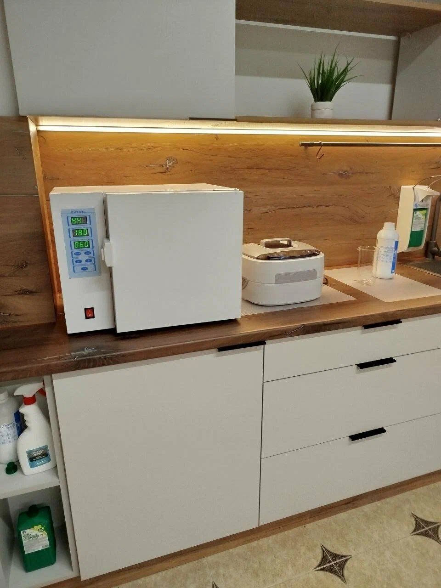
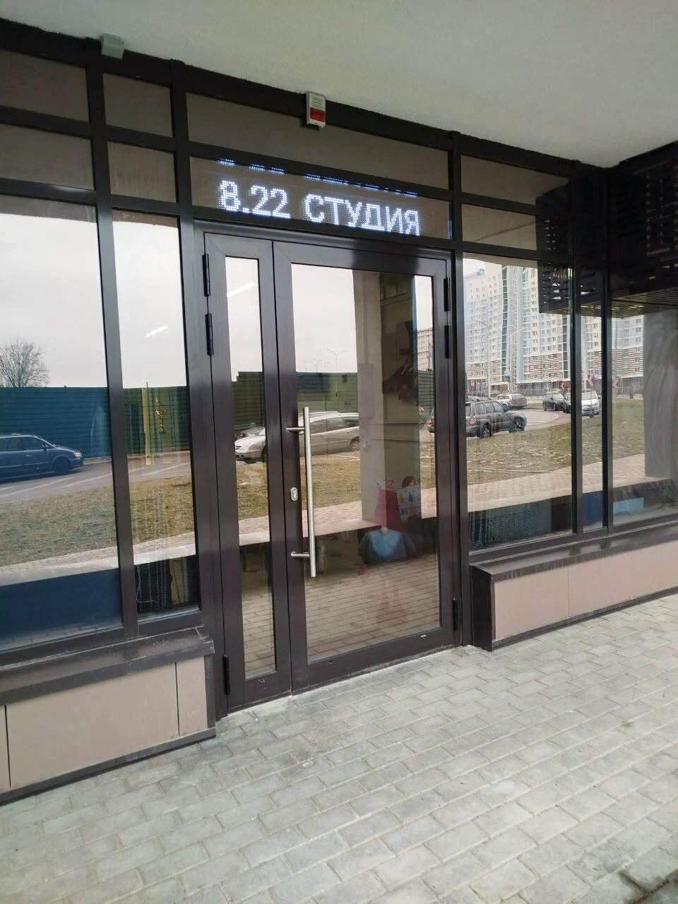

О студии
Спокойное место для ухода
8.22 студия это салон красоты в Минске: брови, ресницы, маникюр и педикюр. Мы любим, когда всё аккуратно, понятно и без спешки.

Пространство
Светлые рабочие места
В студии светлая отделка с деревом, тёплая подсветка и удобные кресла. Рабочие места оснащены лампами, а на стене можно включить спокойный видеоряд.

Чистота
Инструменты обрабатываются
В студии есть оборудование для обработки инструментов: сухожаровой шкаф и ультразвуковая мойка, рядом дезинфицирующие средства. Подробности о процессе мастер расскажет при визите.

Вход
Как нас найти
Вход со светящейся вывеской «8.22 студия». Мы на проспекте Дзержинского, 34. Рядом станция метро Грушевка. С собой можно взять собаку.
Запись
Выберите удобное время
Напишите в мессенджер или позвоните: подберём время и подскажем по услугам.
Записаться